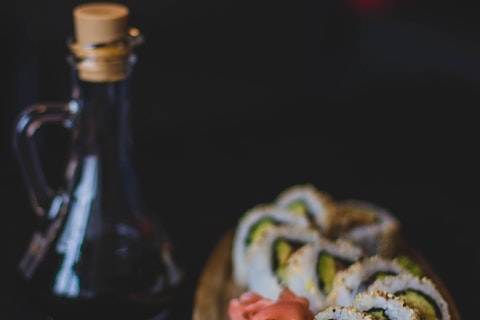
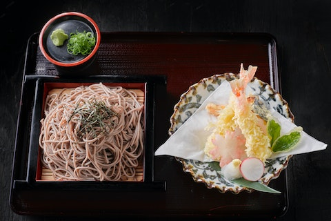

Shari,pepino,gergilim,nori
Acelga,repolho,cenoura,cebola,sal,glutamato monossódico,molho de soja,farinha de trigo,óleo
Molho Agridoce-vinagre de arroz,amido de milho,sal
Massa-ovo,farinha de trigo
Molho Tentsuyu-molho shoyo,saquê,açúcar,hondashi,nabo,gengibre
Cebola,macarrão,vagem,brócolis,couve-flor
